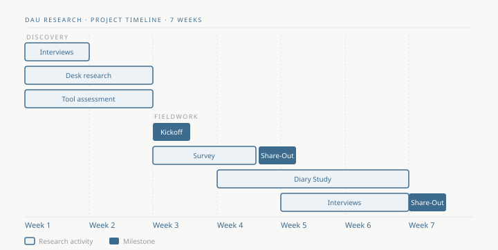

A user retention gap with no
good explanation.
Mercari had solid data on surface behaviors — listing frequency, session length, purchase patterns. What it didn't have was an understanding of the why. And there were plenty of internal theories: chase power sellers, invest in social features, go harder on Gen Z. Part of my job was figuring out which assumptions were actually true.

Surface the assumptions.
Then pressure-test them.
I started with stakeholder interviews — not to align on process, but to surface competing hypotheses. Once I knew what the team thought they already knew, I could design research to pressure-test it.
The study ran in three phases: a large-scale survey to identify patterns, a week-long diary study with active users to capture behavior in the moment, and a behavioral analytics check to flag observation bias. I built a Looker dashboard comparing each participant's app usage 30 days before and during the study — so we could see what was real vs. performed.
Midway through, leadership pivoted to a Gen Z focus. Rather than restart, I redesigned the survey to segment by generation. Gen Z valued the same things as everyone else — which became one of the more important things I got to say out loud.
Three insights that changed how
the company thought about itself.
"What I love about Mercari is the naiveté."— Mercari user, diary study
Casual sellers were the
real engine of engagement.
Everyone assumed power sellers drove the platform's value. The data said otherwise: casual sellers — with their occasional mispricing and unexpected listings — were creating the treasure-hunt conditions that kept buyers coming back daily. The habit wasn't built by reliability. It was built by unpredictability.
Users didn't want
Instagram. They wanted the opposite.
The product team had been investing in social features — seller profiles, follower counts, community tools. Users weren't using them. They were connecting through simple transactional moments: a thoughtful note, a kind message after a purchase. They explicitly didn't want to be Poshmark.
"You don't have to participate in stupid parties or be besties with everyone. It's like having a yard sale online."— Mercari user, in-depth interview
The rating system had become
an accidental retention loop.
For engaged users, ratings weren't a trust signal — they were an emotional reason to stay connected after a transaction ended. The platform had accidentally created a retention mechanism. It just hadn't been designed intentionally.
"Ratings are a feel-good activity — each one is personalized. I like being able to rekindle the spirit I had when making the purchase."— Mercari user, diary study

Simplicity wasn't a weakness.
It was the whole point.
The product's lack of forced social interaction wasn't a gap to fill — it was the differentiator. Before adding anything new, the priority should be making what already worked work better.
- Chase power sellers → Enable casual sellers — they create the conditions buyers return for
- Build social features → Amplify transaction-based connection — notes, ratings, personal gestures
- Add surface area → Invest in simplicity — it's the competitive advantage, not a liability
The most-talked-about presentation
from a two-day leadership offsite.
Findings were presented at the PM offsite that set the global executive roadmap — the first time a UX researcher had been invited to that room. The research shaped the FY24 product roadmap, a saved search revamp, a Communities feature launch, and a full value proposition overhaul repositioning Mercari around discovery rather than price comparison.
It also seeded the quarterly UX research lunch-and-learn attended by more than half the company, and the formal benchmarking program that became its own initiative.
"Megan led one of the most important studies in the product team's history. This study is still essential to how we think about our customer base and product today."— Tank Mori, VP Product, Mercari · 14 months after the study